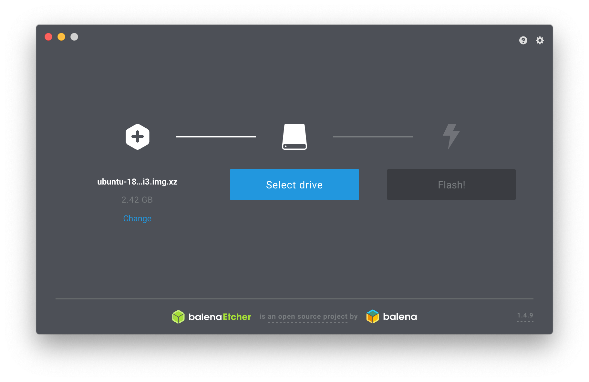
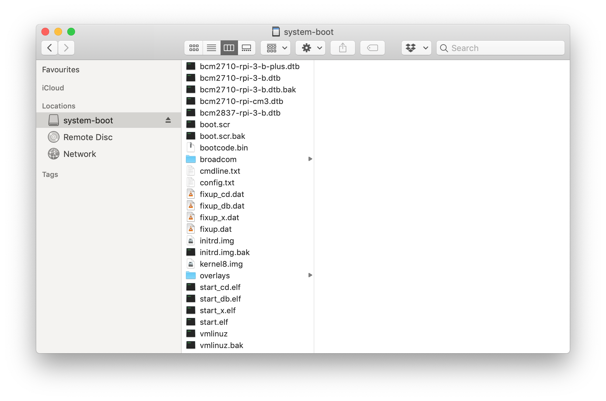

How to run containerized electron app on a Raspberry Pi using ARM64 architecture? With Ubuntu!
I have been a long time fan of electron. It is a tool with which you can "Build cross platform desktop apps with JavaScript, HTML, and CSS". I was really excited when I finally realized that there is a packager for electron and even more so for the debian installer
I've had good experience with running electron on Raspberry Pi in the past, and it was time to do something with it again.
I have a few Raspberry Pi 3 Model B lying around and this is a guide specifically for Model B. I would really appreciate if someone can tell me if you can get this to work with B+ and A+ as well! I also have a couple of official Raspberry Pi 7" touchscreen displays in my disposal so we use one of those as well.
Table of contents:
Ubuntu Wiki has a dedicated page for Raspberry Pi and they're providing a very convenient image with preinstalled 18.04 LTS server for Raspberry Pi Model 3 B/B+: ubuntu-18.04.2-preinstalled-server-arm64+raspi3.img.xz (4G image, 419MB compressed)
To get this image into an SD-card, I like to use BalenaEtcher (it is actually built with Electron as well), which get's the job done without any extra fuzz or learning command-line tools. I use macOS for my day-to-day activities, but because of Electron, they have packaged it to other platforms as well.  It's as easy as 1-2-3. Select an image (you don't even need to decompress it first), select the SD-card and click Flash!
Now, if you have a display and want to utilize it from the beginning, we need to do one thing first. When you open up the contents of the SD-card we just made, you will see something like this:  We are interested in config.txt which looks like this:
enable_uart=1
kernel=kernel8.bin
device_tree_address=0x03000000
dtparam=i2c_arm=on
dtparam=spi=on
arm_64bit=1
Before we boot the thing, we want to append these two lines into this file:
ignore_lcd=0
lcd_rotate=2
By turning "ignore_lcd" off we are telling the kernel to look for an LCD display from the Display Serial Interface (DSI). The other one "lcd_rotate" will rotate the display 180°. I needed this because I installed the legs for my stand upside down :). You might have different need for rotating the display and this is how it's done.
Now we can put in the SD-card and boot up the thing and update the software catalogs and upgrade all packages. After first login with username
ubuntu and the default password ubuntu you are prompted for a password change. Once this step is complete
you can start installing new software. The ubuntu user is in sudoers group by default, so you should be able to run super-user commands by
providing your own password when prompted.
sudo apt-get update && sudo apt-get upgrade
Then install the needed dependencies
sudo apt-get install -y wireless-tools wpasupplicant
After this we can enable the wireless interface, which should be wlan0 by default, at least with Raspberry Pi 3 Model B.
sudo ifconfig wlan0 up
In case you don't already know, or don't remember the SSID for your wireless network, you can run a scan to see what SSID's are being broadcasted. Note that if you're using Model B, like I am, it only supports 2.4GHz wlan band so your 5GHz band is no good here. If you need to connect to a 5GHz band, you need Model B+ or A+. A tip: If you are forced to work with only the Pi + Touchsreen display and can't scroll the terminal output, you can pipe the output of iwlist into tools like less to read it and have the ability to scroll.
sudo iwlist wlan0 scan | less
Ubuntu 18.04 is using Netplan: The network configuration abstraction renderer for its networking. Let's go and configure that for our wireless network.
sudo nano -w /etc/netplan/50-cloud.init.yaml
It should look something like this
network:
version: 2
ethernets:
eth0:
dhcp4: true
match:
macaddress: b8:27:eb:47:a7:7e
set-name: eth0
Now let's add our wireless confguration to this file
network:
version: 2
renderer: networkd
ethernets:
eth0:
optional: true
dhcp4: true
match:
macaddress: b8:27:eb:47:a7:7e
set-name: eth0
wifis:
wlan0:
optional: true
dhcp4: true
access-points:
"Network SSID":
password: "Network Password"
The wifis configuration is really pretty straightforward. We also add a couple of more things in there. We add renderer: networkd,
because the internet said so, not actually sure if it's needed or not, but there it is. Then in order to get rid of the boot-time cloud-init waiting
for network interfaces we add optional: true to both interfaces and that speeds up the boot signifigantly. If you're already reaching
the limits of your IPv4 entropy, you can add dhcp6: true where applicable.
Now we can generate and apply our configuration. You can use the --debug flag to have more verbose output in case any error should emerge
YAML is picky about indetations being correct, so it might be helpful
sudo netplan --debug generate
If everything looks good we can go and apply the new settings
sudo netplan apply
Finally we reboot and see whether our configuration was correct or not
reboot
We can now go ahead and install X Window System as the image provided is a server installation and doesn't provide one by default.
Let's go and install X Server and Fluxbox. If the only reason to run X Window System is for Electron, we might as well choose a very lightweight flavour. Hence, Fluxbox is a good choice for the hardware that we are using so that we leave as much of the resources available to the software we really want to keep running. In this case the Electron app.
sudo apt-get install -y xserver-xorg fluxbox xterm
After the installation is ready, we can testrun the X environment.
startx
To save some time during testing things out it might be a good idea to start X straight after login. We can edit our profile and add the command
nano -w ~/.profile
Append the following to the end of the file and save
if [[ ! $DISPLAY && $XDG_VTNR -eq 1 ]]; then
exec startx
fi
In order to finalize this there are multiple ways of starting things automatically including logging in, but we are going to leave that out from this exercise. This will speed up things a bit already.
What we are still missing is Docker. I followed these instructions from ContainerStack.io.
Again, first some dependencies and the tools we're going to use
sudo apt-get install -y \
apt-transport-https \
ca-certificates \
curl \
gnupg2 \
software-properties-common
Then first, add the GPG signing key for Docker
curl -fsSL https://download.docker.com/linux/debian/gpg | sudo apt-key add -
After this we can add the repository
echo "deb [arch=arm64] https://download.docker.com/linux/debian \
$(lsb_release -cs) stable" | \
sudo tee /etc/apt/sources.list.d/docker.list
Now we can update the software catalogs and go ahead and install docker runtime
sudo apt-get update && sudo apt-get install -y docker-ce
If everything went smoothly you should be able to verify the installed version. At the time of writing, it was
docker --version
Docker version 18.09.3, build 774a1f4
Finally the last piece of the puzzle is our application. Now, I'm going to assume that this is the real reason you are here and that you already have your Electron application ready to go. If not, I think that there are plenty of very good resources out there to go and scour.
Let's start from our package.json, which will already reveal us something about the magic that is about to happen
{
"name": "my-application",
"version": "1.2.3",
"description": "My Application",
"main": "app/index.js",
"scripts": {
"start": "node_modules/.bin/electron .",
"build": "node_modules/.bin/electron-packager . my-application --platform linux --arch arm64 --out dist/",
"debarm64": "node_modules/.bin/electron-installer-debian --src /usr/src/my-application/dist/my-application-linux-arm64/ --dest dist/installers/ --arch arm64"
},
"author": "Your Name <your@name.com>",
"license": "UNLICENSED",
"devDependencies": {
"electron-installer-debian": "^1.1.1",
"electron-packager": "^13.1.1",
"electron": "^4.0.6"
}
}
For making the build environment more portable, we are going to be building our application with two-stage Docker build. This is our Dockerfile
FROM arm64v8/debian:buster as builder
# Install other apt deps
RUN DEBIAN_FRONTEND=noninteractive apt-get update \
&& apt-get -y install \
wget \
gnupg2 \
lsb-release \
fakeroot
RUN wget -qO- https://deb.nodesource.com/setup_10.x | bash -
RUN apt-get install -y nodejs && rm -rf /var/lib/apt/lists/*
WORKDIR /usr/src/my-application
COPY package.json .
RUN JOBS=MAX npm install --unsafe-perm
COPY app/ ./app/
RUN DEBUG=electron-packager npm run build
RUN DEBUG=electron-installer-debian npm run debarm64
FROM arm64v8/debian:buster
ENV MY_APPLICATION_VERSION 1.2.3
RUN DEBIAN_FRONTEND=noninteractive apt-get update \
&& apt-get -y install \
libgtk-3-0 \
libnotify4 \
libnss3 \
libxss1 \
libxtst6 \
xdg-utils \
libuuid1 \
libasound2 \
libglib2.0-bin
WORKDIR /usr/src/my-application
COPY --from=builder /usr/src/my-application/dist/installers/my-application_${MY_APPLICATION_VERSION}_arm64.deb .
RUN dpkg -i my-application_${MY_APPLICATION_VERSION}_arm64.deb
CMD ["my-application"]
In the first build stage, we are using arm64v8 version of debian buster as a baseimage, build our application and package that to a
.deb. In the second stage, we can only install dependencies that are required running the package on an X Window System and
not to worry about the dependencies of the application as it's already packaged as a self-containing Electron executable. So now we can just
copy our package from the builder stage using --from=builder install the application and run it with CMD.
Now we can build the application
docker build -t your-context/my-application:1.2.3 .
And then published
docker publish your-context/my-application:1.2.3
Now we are ready to run our application! The only thing we need to do is to tell our application on which display to render itself and give
information how to authorize itself to the X Window System. So here is how to finally run it. After we have logged in and Fluxbox
has started, we can hit ALT+F2 in order to get the RUN -dialog. Type in xterm and hit ENTER. Now, in terminal
we can run the container like this
sudo docker run --net=host --env="DISPLAY" --volume="$HOME/.Xauthority:/root/.Xauthority:rw" \
your-context/my-application:1.2.3
Your application should now be running in your Fluxbox inside a Docker container, on arm64 Ubuntu in Raspberry Pi 3 Model B.
For my own application there are still a few things that I want to do:
And further down the line:
Please give feedback on my personal Twitter, Hacklab Twitter or leave a comment with Disqus down below. Follow us on Instagram and Facebook